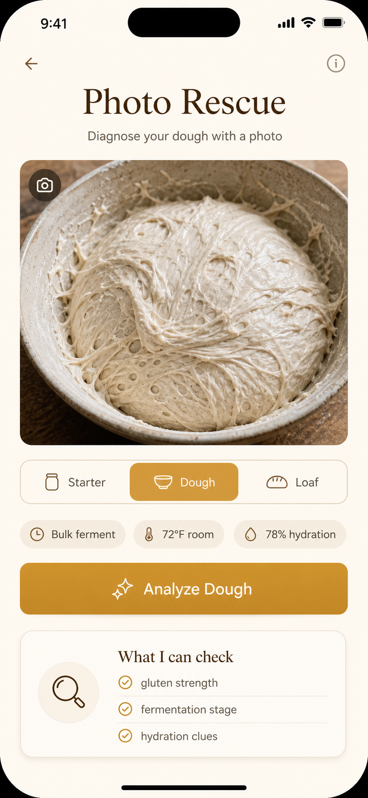

Artisan baking companion
Your dough has a next move.
Photograph your sourdough, get a visual diagnosis, and turn it into a bake-day plan — before the dough gets away from you.


Photograph your sourdough, get a visual diagnosis, and turn it into a bake-day plan — before the dough gets away from you.

Analyze dough, starter, crumb, or loaf with a photo and visual AI context.
Get structured evidence-based findings, not guesses. Low, medium, or high confidence.
Immediate, ranked actions to save your bake. Cautious and practical by design.
Generate a deterministic overnight timeline. Every fold, proof, and preheat scheduled.
Result-first calculators for hydration, starter ratios, and dough weight scaling.
Track feedings, activity, and health over time. Build a consistently strong culture.
Take or upload a photo of your starter, dough, crumb, or loaf. Add optional context for a better reading.
Receive a structured visual diagnosis with evidence, confidence level, and immediate rescue steps.
Turn the diagnosis into a deterministic bake-day schedule with every step timed and ready to follow.